How this guide works
- Keep this page open next to VS Code, and do each step in VS Code.
- Choose Windows or Mac at the top of the page. The keys and the steps change to match your computer. On a Mac, ⌘ is Command, ⌃ is Control, ⌥ is Option, and ⇧ is Shift.
- Each step says why you do it, what to do, and what you should see. Check that before you go on to the next step.
- Tick Done when you finish a step. Your ticks stay in this browser, so you can stop and come back later.
How to ask Copilot
Copilot does the typing. You won't type any code or commands in this guide. When a step needs a command, or a change to a file, you ask GitHub Copilot. Each time you see an Ask Copilot box:
- Open the Chat view: Ctrl+Alt+I⌃⌘I. You can also open the Chat menu at the top of the VS Code window and choose Open Chat.
- At the bottom of the chat box, open the agent picker and choose Agent (not Ask or Plan). In Agent mode, Copilot can change files and run commands for you. Leave the other pickers as they are. They usually read Copilot, Auto and Manual permissions.
- Click Copy on the prompt in this guide, paste it into the chat box (Ctrl+V⌘V), and press Enter.
- Read what Copilot did before you accept it.
- Copilot made or changed a file? Click Keep. If it's wrong, click Undo and ask again.
- Copilot wants to run a command? It shows you the command and waits. Read it, then click Allow (it may say Allow Once), or Skip. Don't choose an option that allows everything from now on.
Copilot's answers are a little different every time. That's fine, as long as the result passes the step's check. Each prompt uses a little of your monthly Copilot allowance, and this guide needs about 10 prompts. To see what's left, click the Copilot icon in the status bar at the bottom of VS Code.
Part 1
Your project folder
Every project starts as a folder on your laptop. In steps 1 to 3 you download the Pinecone Coffee project folder, open it in VS Code, and run it once. Nothing is on GitHub yet.
Download the project folder, and unzip it
Why: this guide starts where most projects start: a folder with data and code on your laptop. Everything the project needs is inside that one folder: one project = one folder = one repository.
5 KB. One folder with the data, a script, a notebook, a README, and two fake private files to practice with.
Do this
- Click Download pinecone-sales.zip above. Your browser saves it in your Downloads folder.
- Open File Explorer (Windows+E) and click Downloads in the left pane. Right-click
pinecone-sales.zipand choose Extract All… (Windows may hide the.zipending: look forpinecone-saleswith a zipper on its icon.) - In the window that opens, click Browse… Click Documents in the left pane, and double-click your
BAN501folder. (NoBAN501folder yet? Click New folder, typeBAN501, press Enter, and double-click it.) Click Select Folder, then Extract. - Open Finder and click Downloads in the sidebar. If you see
pinecone-sales.zip, double-click it: apinecone-salesfolder appears next to it. (If you only see the folder, Safari has unzipped it for you.) - Click the
pinecone-salesfolder once, and press ⌘C to copy it. Click Documents in the sidebar, and double-click yourBAN501folder. (NoBAN501folder yet? Click File ▸ New Folder, typeBAN501, press Return, and double-click it.) Press ⌘V to paste.
You should see
A pinecone-sales folder inside Documents\BAN501. Inside it: a data folder, .env, analysis.py, README.md, report.ipynb and requirements.txt. (Windows may hide endings like .py.)
A pinecone-sales folder inside Documents/BAN501. Inside it: a data folder, analysis.py, README.md, report.ipynb and requirements.txt. Finder hides .env, because its name starts with a dot. VS Code shows it in step 2.
If something goes wrong
- No
pinecone-salesfolder inBAN501? It went to Downloads. Right-clickpinecone-sales.zipagain, choose Extract All…, and this time click Browse… and pickBAN501. - A
pinecone-salesfolder inside anotherpinecone-salesfolder? Use the inner one: it's the one withREADME.mddirectly inside it.
Open the folder in VS Code, and trust it
Why: VS Code, Git and Copilot all work in the folder you have open. Open the project folder itself, not the folder above it.
Do this
- In VS Code, click File ▸ Open Folder…
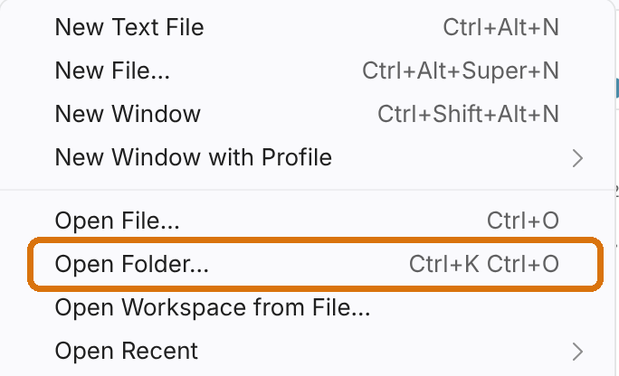
- Click Documents in the left panesidebar on the left of the window, and double-click
BAN501. Then clickpinecone-salesonce, to select it. - Click Select Folder.Open. If macOS asks, now or later, whether Visual Studio Code can access files in your Documents folder, click Allow.
- Trust the folder. It's a project from your instructor, so tell VS Code that you trust it:
- If a Restricted Mode bar appears at the top of VS Code, click Manage in that bar. In the tab that opens, click Trust.
- If instead a window asks Do you trust the authors of the files in this folder?, click Yes, I trust the authors.
- No bar and no window? Look at the left end of the status bar, along the bottom of VS Code. If it says Restricted Mode, click it, then click Trust. If it doesn't, the folder is already trusted.
The Restricted Mode bar (its color depends on your VS Code theme). Click Manage.
You should see
PINECONE-SALES at the top of the Explorer (Ctrl+Shift+E⇧⌘E). Below it: the data folder, .env, analysis.py, README.md, report.ipynb and requirements.txt. No Restricted Mode bar.
Why trust matters
In Restricted Mode, VS Code turns off Copilot's Agent mode and the terminal, so the next steps wouldn't work. Trust only folders you made yourself, or that come from people you know, like your instructor.
Look around, and run it
Why: before you put a project on GitHub, know what's in it. Most files are fine to share. Some must never leave your laptop.
| File | What it is | Goes on GitHub? |
|---|---|---|
data/sales.csv | 12 weeks of sales: one row per drink per day | Yes |
analysis.py | A script that prints cups and revenue by drink, and the top drink | Yes |
report.ipynb | A notebook: the same analysis, with a bar chart | Yes |
README.md | What the project is, and how to run it | Yes |
requirements.txt | The packages the project needs: pandas and matplotlib | Yes |
.env | A fake secret key. Real projects keep passwords and keys in a file like this | Never |
data/customers_private.csv | Fake customer names, emails and phone numbers | Never |
Do this
- Read the README. Right-clickControl-click (or two-finger click)
README.mdin the Explorer, and choose Open Preview.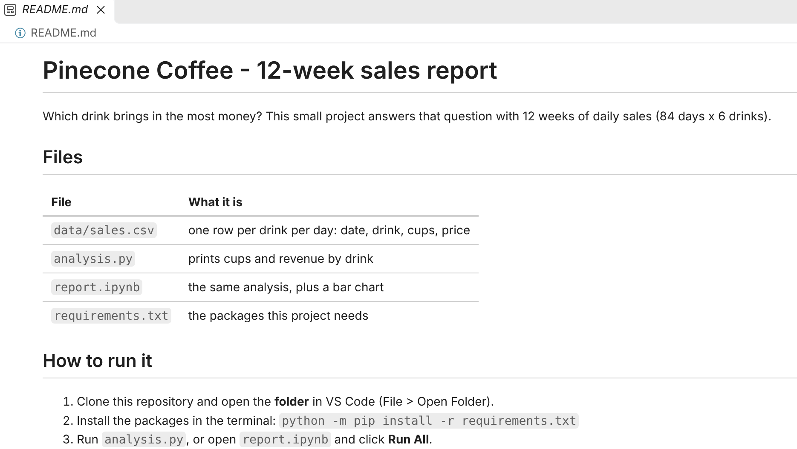
- Run the script. Open
analysis.pyand click ▷ (Run Python File) at the top right of the editor. The output appears in the terminal at the bottom of VS Code.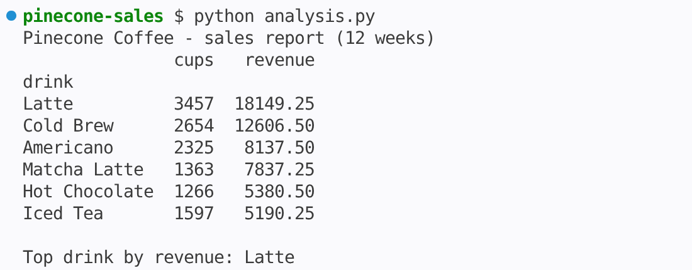
You should see
A table of cups and revenue for each drink, and Top drink by revenue: Latte.
If something goes wrong
- VS Code asks you to select a Python interpreter? Pick the Python you use in class.
ModuleNotFoundError: No module named 'pandas'means pandas isn't installed for this Python. Ask Copilot: Install pandas for the Python that VS Code uses, click Allow, and run the file again.FileNotFoundError: ... 'data/sales.csv'? You opened the folder above the project, so Python looked for the data in the wrong place. Open thepinecone-salesfolder itself (step 2).
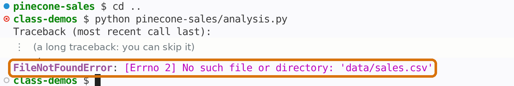
Part 2
Get ready, once per computer
Steps 4 and 5 take 10 to 20 minutes. You do them once on each computer. On a computer you've set up before, check them quickly and go on.
A GitHub account, and Copilot
Why: GitHub is where your projects live online, and Copilot uses the same account.
Do this
- No GitHub account yet? Make one at github.com/signup.
- You already use Copilot in class. If you don't have it yet, verified students get Copilot for free through GitHub Education: how to get Copilot as a student.
- In VS Code, click the Accounts icon (the person icon) near the bottom of the bar on the far left. If your GitHub username isn't there, choose the option to sign in with GitHub, and finish signing in on the web page that opens.
You should see
Your GitHub username in the Accounts menu.
Set up Git: install it, and tell it your name
Why: VS Code's GitHub buttons (Publish, Commit, Sync and Clone) all use a free program called Git. VS Code doesn't include Git, so it must be installed once on your computer. Git also writes your name and email on every commit, so everyone can see who saved each version. Without them, your first commit stops with an error, or gets labeled with your computer's name instead of yours.
A. Is Git installed?
- Click the Source Control icon in the bar on the far left (Ctrl+Shift+G⌃⇧G).
- Look at what it shows:
- Initialize Repository and Publish to GitHub buttons: Git is ready. Don't click either button yet (you publish in step 8). Go on to part B.
- A Download Git for WindowsmacOS button: Git isn't installed yet. Do items 3 and 4 below.
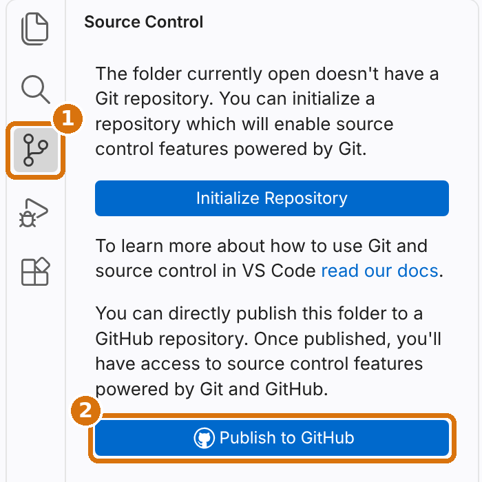
Git is ready: Source Control shows Initialize Repository and Publish to GitHub. - Install Git. Click Download Git for Windows. On the web page that opens, click Click here to download. When the download finishes, open the file. Its name starts with
Git-and ends with.exe, and you'll find it in your browser's list of downloads or in your Downloads folder. Click Yes if Windows asks to allow changes. Click Next on every screen, then Install, then Finish. The default choices are fine. - Install Git. On a Mac, Git comes with Apple's free command line developer tools. Don't use the Download Git for macOS button: Apple's tools are easier.
- If a window says the git command requires the command line developer tools, click Install, then Agree, and wait until it says the software was installed. This can take 5 to 15 minutes.
- No window? Ask Copilot, as shown below. Copilot asks to run a command (
xcode-select --install): click Allow. In the window that opens, click Install, then Agree. Wait until the window says the software was installed, even if Copilot says it's finished.
Ask Copilot Chat view, Agent
Install Git on my Mac, with Apple's command line developer tools
- After you install Git, close VS Code completely, then open it again. VS Code looks for Git only when it starts. Close every VS Code window (or click File ▸ Exit).Click Code ▸ Quit Visual Studio Code (⌘Q). Closing the window isn't enough. When you open VS Code again, it opens your
pinecone-salesfolder, and Source Control shows Publish to GitHub.
B. Tell Git who you are
- Type your name and the email of your GitHub account here. The prompt below fills them in for you. Nothing you type leaves this page.
Your email is shown on every commit you make. To keep it private, use GitHub's private noreply address instead: on github.com, click your profile picture (top right) ▸ Settings ▸ Emails, and copy the address that ends in
@users.noreply.github.com. - Ask Copilot:
Ask Copilot Chat view, Agent
Set my Git user name to "Your Name" and my email to "you@example.com" for all my projects. Also make git pull merge instead of rebase.
Check: Copilot shows the commands it wants to run. They start with
git config --global, and your name and email are in them. Then click Allow. (Copilot may ask once for each command.)
You should see
Source Control shows Publish to GitHub, and Copilot says that your name and email are set.
What the last sentence of the prompt does: sometimes your laptop and GitHub both have new commits. This setting tells Git to combine them (merge), instead of stopping with an error when you sync.
If you skip part B, your first commit may stop with this error:
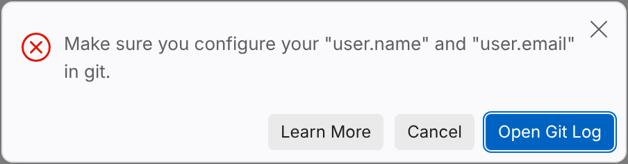
Part 3
Put it on GitHub
This is the main job: your project folder goes up to GitHub, without its private files. Step 6 explains the ideas, step 7 makes the do-not-upload list, and step 8 uploads the project.
How GitHub works, in one picture
Three names, three jobs:
- Git is a free program on your laptop. It saves versions of your project folder. Each saved version is a commit, with a short message, a name and a date. No more
report_final_REAL.ipynb: one file, and every version saved. - GitHub (github.com) keeps a copy of your project online, with the same commits. It's a backup, and you can share it.
- VS Code has a Source Control panel with buttons that run Git and talk to GitHub for you.
Read the picture from left to right. When your work reaches a good point, you commit: Git saves a version of the whole project folder, on your laptop. Push sends your commits up to GitHub. Pull brings new commits down. In VS Code, the Sync Changes button does both: it pulls, then pushes.
Words you will hear. Come back to this table whenever a word feels unclear.
| Word | What it means | Think of it as |
|---|---|---|
| Repository (repo) | A project folder that Git keeps track of | A folder with a memory |
| Commit | A saved version of the project, with a short message | A save point in a game |
| Push | Send your commits up to GitHub | Upload |
| Pull | Bring new commits down from GitHub | Download the latest |
| Sync | Pull, then push, with one button | Two-way update |
| Clone | Copy a repository from GitHub to a computer, with all its history | The first full download |
| Remote (origin) | The GitHub copy that your folder is linked to | The online twin |
| Branch (main) | A line of work. Every project starts with one, named main | In this course you stay on main |
| .gitignore | A list of files Git must never save or upload | The do-not-upload list |
Keep private files off GitHub: .gitignore
Why: your folder has two files that must never leave your laptop: .env (a key) and data/customers_private.csv (customer names and emails). A file named .gitignore lists files like these. (The dot at the start is part of the name.) Git skips everything on the list. Those files stay in your folder, but they're never saved in a commit and never uploaded.
Make the .gitignore before your first upload. Once a file is on GitHub, it stays in the project's history, even if you delete it later.
Ask Copilot Chat view, Agent
Create a .gitignore that ignores only these five items: .env, data/customers_private.csv, __pycache__/, .ipynb_checkpoints/ and .venv/
Check: the .gitignore lists those five items, and no line like data/ or *.csv (that would keep your sales data off GitHub too). Copilot may add notes that start with #; Git skips those lines. Click Keep.
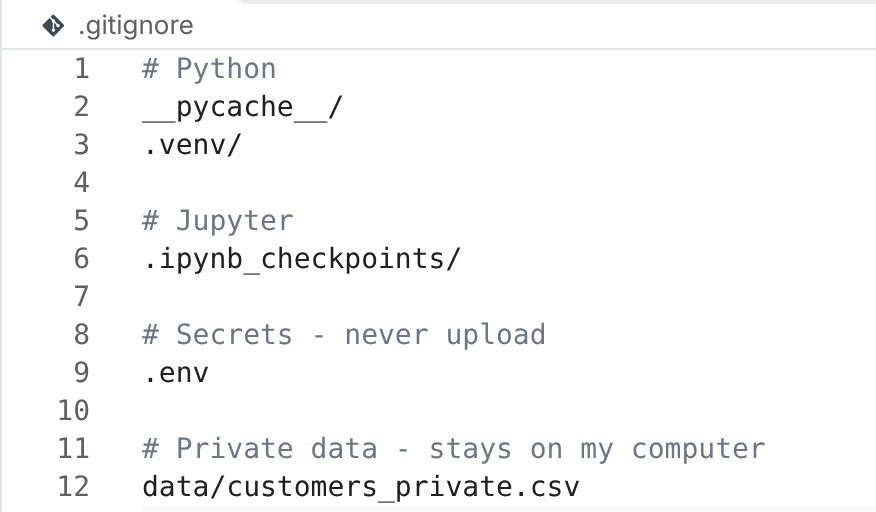
You should see
A new file, .gitignore, in the Explorer, with those five items in it. It starts to work in step 8, when your folder becomes a Git repository.
What goes in a .gitignore:
| Item | Why |
|---|---|
.env | Passwords and keys (API keys) live here |
data/customers_private.csv | Private data: names and emails |
__pycache__/ and .ipynb_checkpoints/ | Folders that Python and Jupyter make by themselves |
.venv/ | A virtual environment: big, and anyone can rebuild it |
| Very large data files | GitHub refuses files over 100 MiB (step 21) |
Your own projects
Your own project folders won't come with a .gitignore. Before you publish one, ask Copilot for one, and name every private or very large file in your prompt.
Publish to GitHub: your first upload
Why: publishing puts your project on GitHub for the first time. One button does four jobs: it creates the repository on GitHub, saves a first commit, uploads it, and links your folder to it.
Do this
- Click Source Control in the bar on the far left (Ctrl+Shift+G⌃⇧G).
- Click the blue Publish to GitHub button.
- If VS Code says The extension 'GitHub' wants to sign in using GitHub, click Allow. Your browser opens GitHub: sign in if it asks, and click Authorize. If the browser asks to open Visual Studio Code, click Open. Then go back to VS Code.
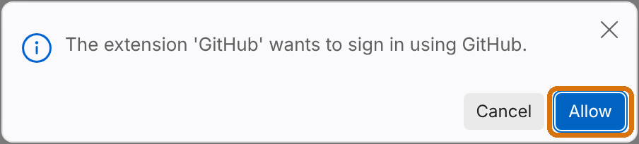
- A box opens at the top of VS Code with your folder's name,
pinecone-sales. (Does it sayBAN501? Press Esc: you opened the folder above the project. Go back to step 2.) Keep the name, and click Publish to GitHub private repository.pinecone-salesPublish to GitHub private repositoryyour-username/pinecone-salesPublish to GitHub public repositoryyour-username/pinecone-salesChoice Who can see it Use it for Private repository Only you, and people you invite Class work. Graded work always goes in a private repository Public repository Anyone on the internet A portfolio project, after you check that it has no passwords or private data - Wait a few seconds while VS Code uploads your project. If a Connect to GitHub window opens, click Sign in with your browser, then click Authorize on the web page that opens, and go back to VS Code. When VS Code says the repository was published, click Open on GitHub.
- Back in VS Code, a second message may ask: Would you like Visual Studio Code to periodically run "git fetch"? Click Yes. VS Code then checks GitHub for new commits now and then. Fetching never changes your files; it only shows you what's new.
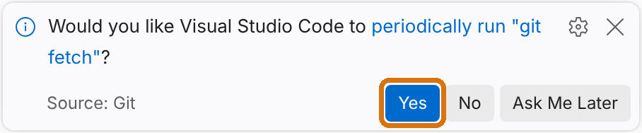
You should see
Your repository on GitHub, with the data folder, .gitignore, README.md, analysis.py, report.ipynb and requirements.txt. GitHub shows your README below the list of files. Open the data folder: only sales.csv is there. .env and customers_private.csv are not on GitHub. The .gitignore works.
Back in VS Code, the two private files are still in your folder. Git just leaves them out.
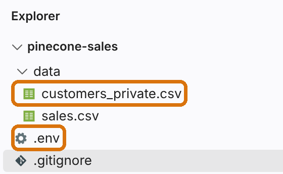
If something goes wrong
- A list of files with check boxes appeared (Select which files should be included in the repository)? Your folder has no
.gitignore. Press Esc, do step 7, then publish again. - No
datafolder on GitHub, or nosales.csvin it? Your.gitignorehides it. Ask Copilot: Remove the line in .gitignore that hides data/sales.csv. Then commit and push, as in steps 11 and 12. - Clicked Initialize Repository instead? That only starts tracking your folder on your laptop; nothing is uploaded. Type first commit in the message box, click Commit, then click Yes to stage all your changes. The blue button changes to Publish Branch, which uploads the same way.
Later: make it public, or private again
VS Code asks private or public? only once, when you publish. To change it later, use the GitHub website:
- Open your repository on github.com, and click Settings (the tab with the gear, under the repository name).
- Scroll to the bottom of the page, to the Danger Zone. Next to Change repository visibility, click Change visibility, and choose public (or private).
- GitHub asks you to confirm a few times. Read each message, then click Make this repository public (or private).
Before you make a repository public, remember that its whole history becomes public too: everything you ever committed, even a file you deleted later. Graded work stays private.
Part 4
Keep it up to date
Your project is on GitHub. When you change it, you save a version and upload it (steps 9 to 13). When it changes on GitHub, you bring the change down (steps 14 and 15).
The everyday loop: change, commit, push
You publish a project once. From now on, every time your work reaches a good point, you repeat five steps:
- 1Change & saveSave a file (Ctrl+S⌘S). Git notices the change.
- 2ReviewSee what changed: red is the old version, green is the new one.
- 3StagePick the files for this save point with +.
- 4CommitSave a version, with a short message.
- 5PushSend your commits to GitHub (or Sync: pull, then push).
Two ideas to remember:
- Commit = a save point on your laptop.
- Push = send your save points to GitHub. Sync does it too, after a pull.
Commit whenever something works: the data loads, a chart looks right, a bug is fixed. Small, frequent commits are best, because each one is easy to understand and easy to undo. You'll do the loop twice: in steps 10 to 12, and again in step 13.
Change a file, and see what changed
Why: Git notices every change you save, and shows you exactly what changed. Look at your changes before every commit: this is when you catch mistakes.
Ask Copilot Chat view, Agent
In analysis.py, also print the average cups per day.
Check: click Keep, and run the file again with ▷. It now also prints the average cups per day.
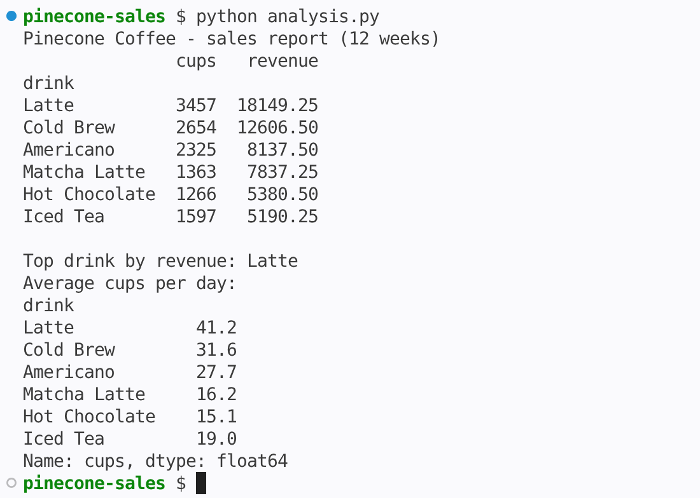
Do this
- Open Source Control.
analysis.pyis under Changes, with an M: modified.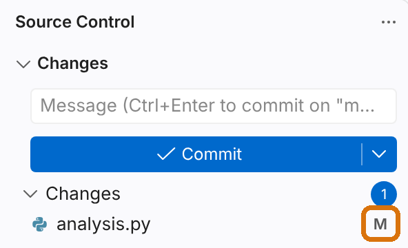
- Click the file to compare the two versions. Red lines are the old version. Green lines are the new version. In a wide window, the old version is on the left and the new one on the right. In a narrow window, they're shown one above the other.
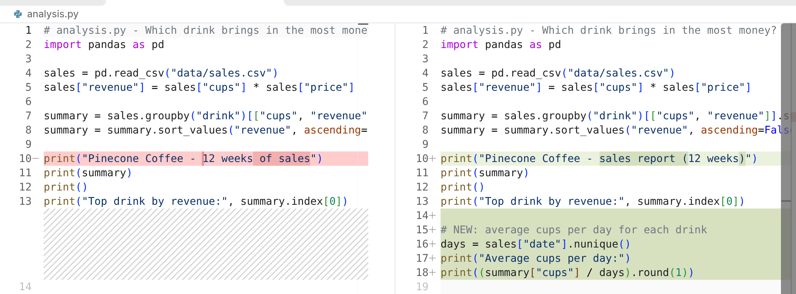
- Go back to the file in the editor (click its tab). A colored bar in the margin marks the lines that changed: green for new lines, blue for changed lines, and a small red triangle where lines were deleted.
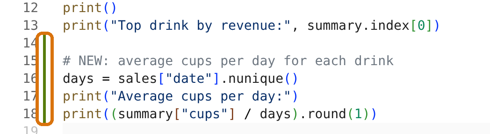
You should see
analysis.py under Changes with an M, and its new lines in green.
Commit: save a version
Why: a commit is a save point. Before you commit, you stage the files that belong in it. Think of packing a box: staging puts things in the box, and committing seals it with a label, the message.
Under Changes, every file that is new or changed since the last commit has a letter:
| Letter | Meaning |
|---|---|
| M | Modified since the last commit. analysis.py shows M now |
| U | Untracked: a new file, never saved in Git before |
| A | Added: a new file that you have staged |
| D | Deleted |
Do this
- Stage: hover over
analysis.pyunder Changes and click +. The file moves up to Staged Changes.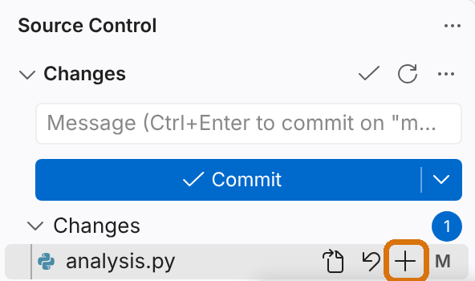
- Message: click the sparkle button at the right end of the message box. Its tooltip says Generate Commit Message. Copilot reads your changes and writes a message. Read it, and shorten or fix it so it says what you did, for example Add average cups per day.
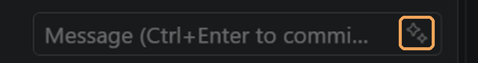
The sparkle button, at the right end of the message box. - Commit: click Commit.
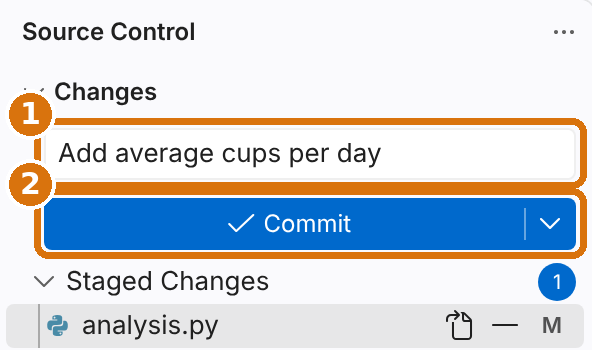
Write messages that say what you did, so you can find the right version later:
| Good messages | Bad messages |
|---|---|
| Add average cups per day | update |
| Add revenue chart | stuff |
| Fix price for Iced Tea | asdf |
Shortcut
Write the message first (or click the sparkle). Then click Commit with nothing staged: VS Code offers to stage all your changes and commit them. Click Yes.
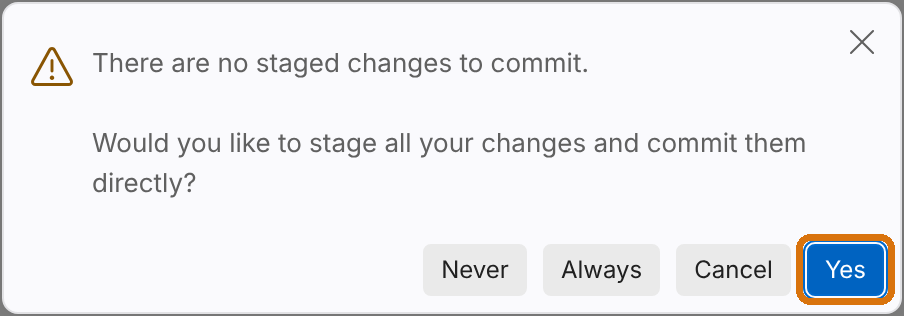
You should see
The list of changes is empty, and the blue button now says Sync Changes 1↑.
Push: send your commit to GitHub
Why: a commit is saved on your laptop only. Pushing sends it up to GitHub.
Do this
- Look at the blue button: Sync Changes 1↑ means one commit is waiting to go up. The status bar at the bottom of VS Code shows the same: 0↓ 1↑.
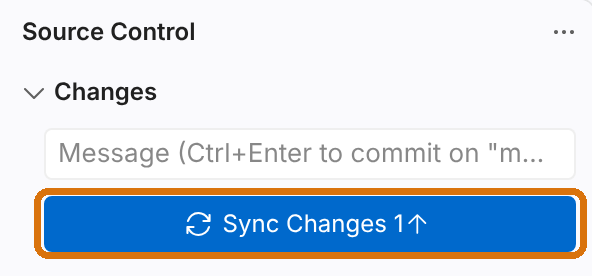
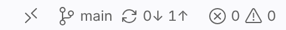
- Open the Graph at the bottom of Source Control. Your new commit is under Outgoing Changes: it's on your laptop, not on GitHub yet.
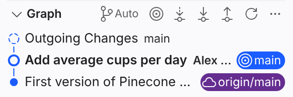
- Push: click ··· (More Actions) at the top of Source Control, then Push. (Or open the Command Palette, Ctrl+Shift+P⇧⌘P, and run Git: Push.)
- Refresh your repository's page on GitHub, and click
analysis.py.
You should see
The new lines for the average cups per day in analysis.py on GitHub. In VS Code, the Graph no longer shows Outgoing Changes.
Push or Sync Changes?
Push only sends your commits up. The blue Sync Changes button does two jobs: it pulls new commits down from GitHub first, then pushes yours up. Most of the time, use Sync Changes: if GitHub has commits that you don't have yet, a push alone fails, and Sync Changes fixes that by pulling first. You'll use it in the next step.
Remember
A commit stays on your laptop until you push or sync. Not pushed = not on GitHub: your instructor and your teammates can't see it yet.
Run the notebook, and upload its results
Why: a notebook can save its results (tables and charts) inside the file, and GitHub shows them.
Do this
- On GitHub, open
report.ipynb. You see only code: nobody has run it yet. - In VS Code, open
report.ipynb. Click Select Kernel at the top right, choose Python Environments, and pick the Python you use in class. - Click Run All. If VS Code asks to install
ipykernel, click Install.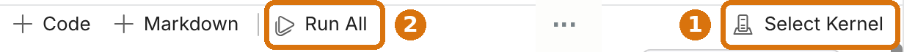
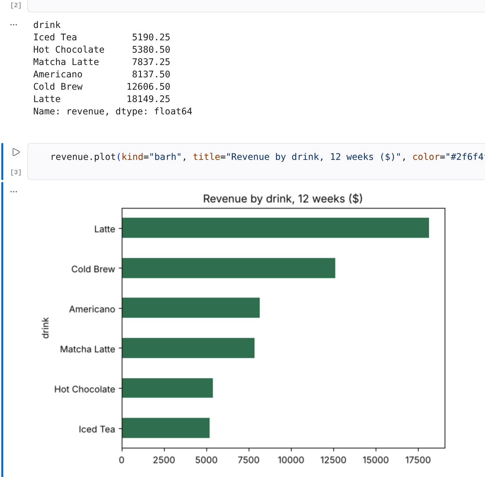
- Save the notebook: Ctrl+S⌘S. The table and chart go into the file only when you save, so save before you commit.
- Commit: stage
report.ipynbwith +, let the sparkle write the message, and click Commit. - Sync: this time, click the blue Sync Changes button: it pulls, then pushes. VS Code asks before it pulls and pushes. Click OK. (It asks on every sync. If you don't want to be asked again, click OK, Don't Show Again.)
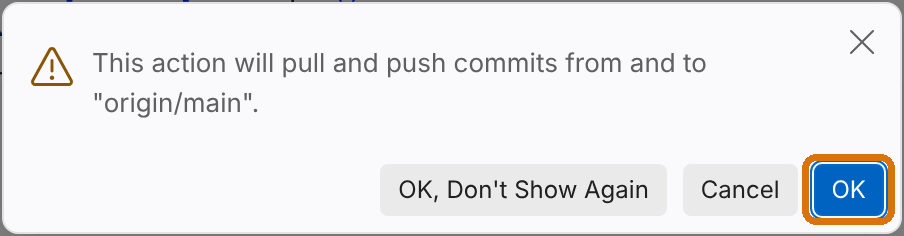
You should see
A revenue table and a bar chart, with no errors. On GitHub, open report.ipynb again: now GitHub shows its table and chart.
If something goes wrong
No module named 'matplotlib'? Ask Copilot: Install matplotlib for the Python this notebook uses, click Allow, then click Run All again.
Good to know about notebooks
A notebook saves its outputs (tables, charts, printed text) inside the file. That's good, because GitHub shows your results. But the outputs make the file bigger, and they can hold private data, for example a table of customer names. When outputs are big or private, clear them before you commit: open the Command Palette (Ctrl+Shift+P⇧⌘P), run Notebook: Clear All Outputs, then save (Ctrl+S⌘S).
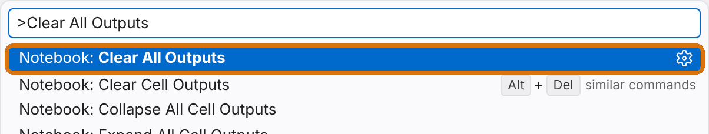
A change on GitHub: edit the README there
Why: sometimes a project changes on GitHub, not on your laptop: a teammate pushed a commit, or you fixed something on another computer. To practice, you make that kind of change yourself, on github.com.
Do this
- Open your repository on github.com. In the list of files, click
README.md. - Click the pencil icon at the top right of the file to edit it.
- Click at the end of the first line (the title), press Enter twice, and type: The data covers August to October 2026.
- Click the green Commit changes… button. In the window that opens, keep the message (Update README.md) and keep Commit directly to the main branch. Click Commit changes.
You should see
The new line in the README on GitHub. Now GitHub has a commit that your laptop doesn't have yet.
Pull: bring the change down to your laptop
Why: your laptop is now one commit behind GitHub. Pulling brings that commit down. It works the same way with a teammate: they push, you pull.
Do this
- In VS Code, open Source Control, click ··· (More Actions) at the top, then Pull.
If VS Code has already checked GitHub (you clicked Yes to fetching in step 8), the blue button says Sync Changes 1↓, and the Graph shows the new commit under Incoming Changes. Clicking Sync Changes pulls it the same way.
This button shows 1↓ 1↑: one commit to bring down and one to send up. Yours shows 1↓. 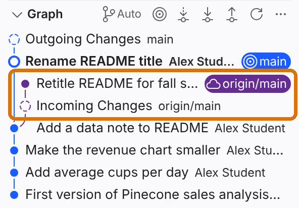
- Open
README.md: the new line is there.
You should see
The new README line on your laptop, the same as on GitHub.
Two rules for every project
- Pull before you start working, so you begin with the newest version.
- Commit your own work before you pull, so nothing gets overwritten.
Part 5
Look back, and undo
Every commit stays in the history. In steps 16 and 17 you look back through it, and undo mistakes safely.
Look back in time: Graph and Timeline
Why: nothing you commit is lost. You can see who changed what and when, and look at any old version.
Do this
- Open Source Control ▸ Graph. It lists every commit, with its message and who made it: first commit, your two commits, and Update README.md from GitHub. Hover over a commit to see when it was made.
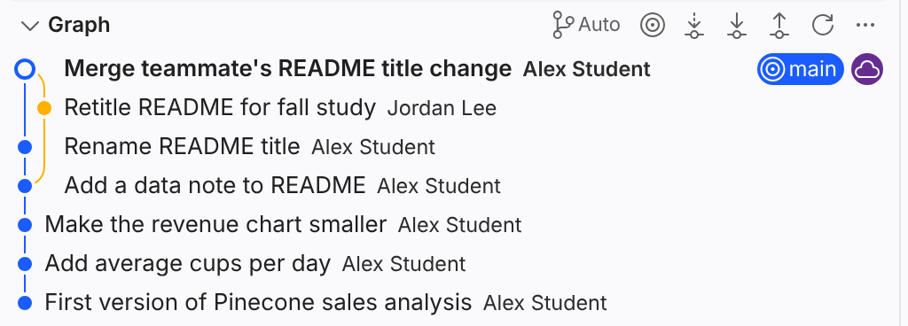
The Graph of a team project: two people's commits, and two lines of work joined at the top. Your Graph is a single line. - Open
analysis.py. In the Explorer, open Timeline at the bottom. It shows the history of the one file you have open.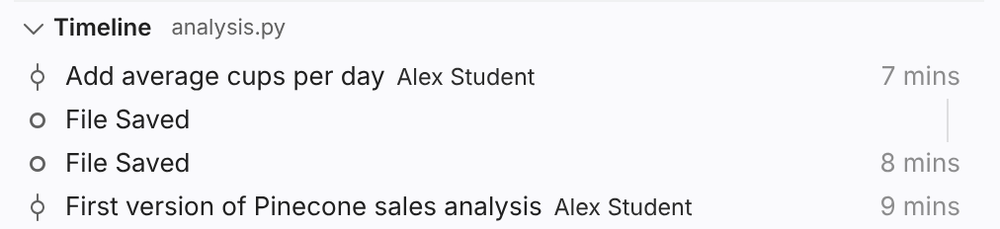
- Click the oldest commit in the Timeline, first commit. Every line is green, because this commit added the file to Git. Then click the newer commit: it shows only the lines you added in step 10.
You should see
The first version of analysis.py, before you added the average cups per day.
Undo safely
Why: everyone makes mistakes. Most undos are one click in Source Control:
| I want to… | Do this | Good to know |
|---|---|---|
| Take a file out of the next commit | Unstage: click − next to it under Staged Changes | Safe: your edits stay |
| Throw away edits I haven't committed | Discard Changes: the curved-arrow icon next to the file | Can't be undone |
| Undo my last commit (not synced yet) | ··· ▸ Commit ▸ Undo Last Commit | Only before you sync |
| Undo a commit that is already on GitHub | Revert it, with Copilot | Adds a new commit that undoes the old one; safe |
| See an old version of a file | Explorer ▸ Timeline, then click a version | Read-only |
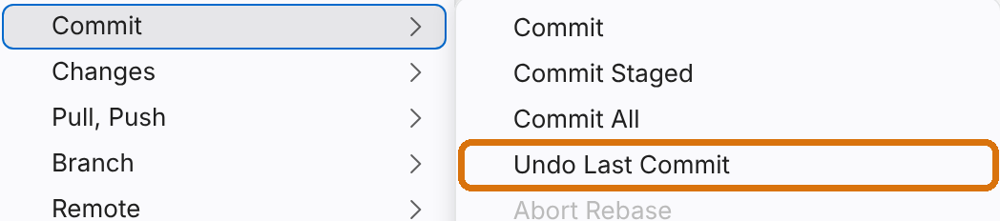
Try all three undos
- Throw away an edit.
Ask Copilot Chat view, Agent
In analysis.py, change the title it prints to "TEST".
Click Keep. In Source Control, hover over
analysis.py, click Discard Changes (the curved arrow), and click Discard File. The file is back to its last commit. Remember, a discard can't be undone. - Undo your last commit, before you sync.
Ask Copilot Chat view, Agent
In README.md, add the line "This is a test."
Click Keep. Stage
README.md, type test in the message box, and click Commit. Now click ··· ▸ Commit ▸ Undo Last Commit. The commit is gone: your change is back under Staged Changes, and test is back in the message box. To throw it all away, delete test from the message box, click − to unstageREADME.md, then click Discard Changes and Discard File. - Undo a commit that is already on GitHub: revert. First, make a mistake on purpose, and sync it:
Ask Copilot Chat view, Agent
In data/sales.csv, change the price in the first Latte row to 52.50.
Click Keep, commit with the message Update sales data, and click Sync Changes. The mistake is on GitHub now. Undo it without erasing the history:
Ask Copilot Chat view, Agent
Revert my last commit, which is already on GitHub, without rewriting history. Keep the default message.
Check: the command Copilot wants to run has the word revert, and
--no-edit(that keeps Git's own message, so no text editor opens). It must not have--forceorreset --hard: if it does, click Skip and ask your instructor. No--no-edit? Click Skip and send the prompt again. When the command looks right, click Allow, then click Sync Changes.
You should see
A new commit, Revert "Update sales data", in the Graph, and the old price back in data/sales.csv. A revert adds a new commit that does the opposite of the old one. Nothing is erased from the history, so everyone who has a copy of the project can still pull it with no problems.
Never
Never force push, and never delete the hidden .git folder in your project: it holds the whole history.
Part 6
Run someone else's project
GitHub is full of data projects you can learn from: your classmates', your instructor's, and strangers'. In steps 18 to 20 you get one onto your laptop and run it: Ponderosa Bikes, a small analysis of made-up daily bike rentals. Its question: how much do weekends, rain and heat change rentals?
Find the project, and copy its address
Why: before you run a project, read what it does and how to run it. Then copy its address, so VS Code can get it from GitHub.
Do this
- Open the project on GitHub: github.com/…/bike-rentals
- Read the README first. GitHub shows it below the list of files. It says what the project does, and how to run it. Open
rentals.ipynbtoo: you can read the whole analysis, with its results, right on GitHub. - Go back to the project's front page, and click the green Code button.
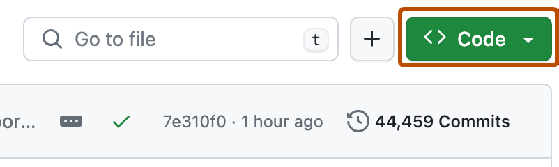
- On the Local tab, under HTTPS, click the copy icon next to the address.
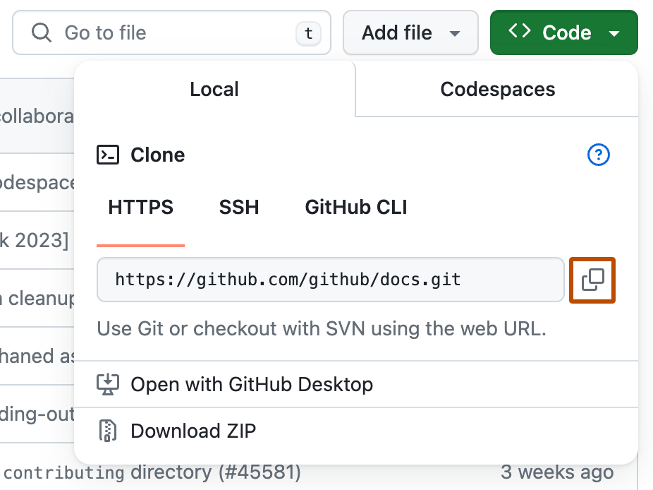
This picture shows another project. Yours ends in bike-rentals.git. GitHub screenshots: GitHub Docs, CC BY 4.0.
You should see
The address is copied. It ends in bike-rentals.git.
Good to know
Download ZIP, in the same menu, gives you only the files: no history, and no link to GitHub. It's fine for a quick look at a project. To work with a project, you clone it.
Clone it to your laptop
Why: cloning copies a repository from GitHub to your computer, with its whole history, and links the copy to GitHub. It's how you get any project from GitHub, including your own projects onto a second computer.
Do this
- Open the Command Palette: Ctrl+Shift+P⇧⌘P. Type
Git: Clone, and press Enter. (Pick Git: Clone, not Git: Clone (Recursive).)>Git: CloneGit: CloneGit: Clone (Recursive) - Paste the address into the box at the top of VS Code (Ctrl+V⌘V), and press Enter.
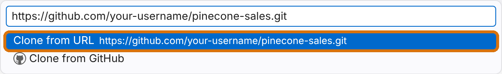
This picture shows another address. Yours ends in bike-rentals.git. - VS Code asks where to put the project. Click Documents in the left panesidebar on the left, click
BAN501once, and click Select as Repository Destination. VS Code makes abike-rentalsfolder insideBAN501. - VS Code asks whether to open the repository. Click Open (not Add to Workspace). Your Pinecone project closes. You can open it again any time with File ▸ Open Recent.
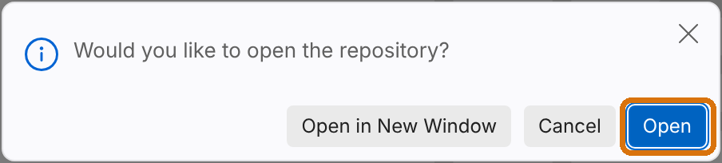
Yours may also offer Add to Workspace. Click Open. - Trust the folder, as in step 2: in the Restricted Mode bar, click Manage, then Trust. It's your instructor's project.
You should see
BIKE-RENTALS at the top of the Explorer, with a data folder, .gitignore, README.md, rentals.ipynb and requirements.txt.
When no folder is open, Source Control also shows a Clone Repository button. It does the same as Git: Clone.
Trust: yes or no?
Trust your own projects, your instructor's, and your teammates'. Code can do anything you can do on your computer, so don't trust a stranger's project until you've read its code. Until you trust a folder, VS Code keeps it in Restricted Mode: you can read the code, but nothing runs by itself, and Copilot's Agent mode is off.
Install what it needs, and run it
Why: every project you clone runs the same way: read the README, install the packages in requirements.txt, then run it.
Do this
- Install the packages the project needs:
Ask Copilot Chat view, Agent
Install the packages listed in requirements.txt
Check: Copilot asks before it installs anything. Check that it's installing the packages from
requirements.txt, then click Allow.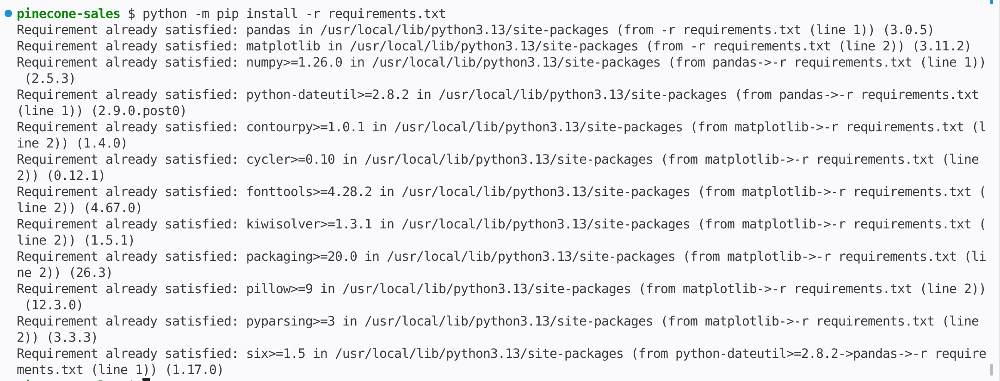
When Copilot installs in the terminal, you see lines like these. (This picture comes from the Pinecone folder. Yours shows bike-rentals, and also lists ipykernel.) Requirement already satisfied means the package is installed already. That's fine: you used them for Pinecone Coffee in steps 3 and 13.
- Open
rentals.ipynb. Click Select Kernel at the top right, choose Python Environments, and pick the Python you use in class. - Click Run All.
You should see
The same results as on GitHub, with no errors: weekends average about 59 rentals a day and weekdays about 34, rain cuts rentals roughly in half, and a bar chart of rentals by temperature.
Good to know
- You can change your copy and run it as much as you like. But you can't send your changes to GitHub: the repository belongs to someone else, and only its owner, and people they invite, can push to it. If you try, VS Code offers to create a fork (your own copy on GitHub). Click No: forks aren't part of this guide.
- When you close this folder, VS Code may ask whether to save
rentals.ipynb. Click Don't Save.
If something goes wrong
ModuleNotFoundErrorin the notebook, even after you installed the packages? The notebook uses a different Python. Click Select Kernel and pick the Python that Copilot installed the packages for.- For any error in the terminal, you can also click the sparkle next to the failed command and choose Fix with Copilot.
Wrap-up
Keep this handy
Good habits, what to do when something goes wrong, a cheat sheet to keep, and a practice with your own project.
Good habits for this class
| Do | Don't |
|---|---|
| Keep graded work in private repositories | Put graded work in a public repository: that is sharing answers |
Make the .gitignore before your first upload | Upload passwords, keys, or customer data |
| Commit small and often, with clear messages | Upload big raw data files |
| Pull before you start. Sync when you stop | Click Allow before you've read the command |
| Add a README and a requirements.txt to every project | Force push, or delete the hidden .git folder |
Use paths that start from the project folder, like data/sales.csv | Use paths like C:\Users\you\Desktop\sales.csv/Users/you/Desktop/sales.csv: they only work on your computer |
Leaked a password or key?
Git remembers every version, so deleting the file later doesn't remove it from GitHub. Change the password or key right away, then tell your instructor.
File sizes: GitHub refuses any file over 100 MiB. Keep each repository small, and share big data with a link or a small sample.
- 25 MiB: the biggest file you can add on the GitHub website
- 50 MiB: you get a warning when you push
- 100 MiB: GitHub refuses the push
When something goes wrong
Find your message in the first column, then do what the last column says.
| You see… | It means… | Do this |
|---|---|---|
| A Restricted Mode bar, or Copilot's Agent mode and the terminal won't work | VS Code doesn't trust this folder yet | Click Manage in the bar (or Restricted Mode at the left end of the status bar), then Trust (step 2) |
| A Download Git button in Source Control | Git isn't installed yet | Install Git, then close and reopen VS Code (step 5) |
| Make sure you configure your "user.name" and "user.email" | Git doesn't know who you are | Tell Git your name and email (step 5, part B) |
| Sync fails: divergent branches | Your laptop and GitHub both have new commits | Ask Copilot: Make git pull merge instead of rebase. Then Sync again |
| Can't push refs to remote. Try running "Pull" first… | GitHub has commits you don't have | Click Sync Changes: it pulls first, then pushes |
| You don't have permissions to push to … Would you like to create a fork…? | The repository belongs to someone else | Click No, and keep your changes on your laptop (step 20) |
ModuleNotFoundError | This Python doesn't have the package | Install from requirements.txt (step 20). In a notebook, pick the same Python in Select Kernel |
FileNotFoundError | Python looked in the wrong folder | Open the project folder itself (step 2) |
| Copilot stops answering and mentions a limit | You've used this month's Copilot allowance | Tell your instructor |
Still stuck? Ask Copilot
- For an error in the terminal: click the sparkle next to the failed command, and choose Fix with Copilot.
- For a Git error: in Source Control, click ··· ▸ Show Git Output, and copy the error message. Then ask in Chat, and paste the message after your question:
What does this Git error mean, and how do I fix it with the buttons in VS Code?
When you ask a person for help, include the error message too.
Cheat sheet: I want to… → click this
Keep this table open while you work.
| I want to… | Click this | Where, or when |
|---|---|---|
| Let Copilot and the terminal work in a folder | Manage ▸ Trust | The Restricted Mode bar, only for your own or known projects |
| Keep a file off GitHub | List it in the .gitignore | Before you publish |
| Put a project folder on GitHub | Publish to GitHub | Source Control, after the .gitignore |
| Make my repository public, or private again | Settings ▸ Change visibility | On github.com (step 8) |
| Save a version | + (stage), message, Commit | Source Control |
| Write the commit message | The sparkle in the message box | Then read and fix it |
| Send my commits to GitHub | ··· ▸ Push, or Sync Changes | Sync Changes pulls first, then pushes |
| Get the newest version | ··· ▸ Pull, or Sync Changes | Before you start working |
| See an old version | Graph, or Explorer ▸ Timeline | Click a commit |
| Undo | Discard, Undo Last Commit, or a revert | Step 17 |
| Get a project from GitHub | Command Palette ▸ Git: Clone | Paste the address from GitHub's Code button |
| Run a project I cloned | Read the README, install, then ▷ or Run All | Ask Copilot to install from requirements.txt |
| Change a file, or run a command | Ask Copilot in Chat, in Agent mode | Read it, then Keep or Allow |
Practice: put your own project on GitHub (15 minutes)
Now do Parts 3 and 4 again, with a folder of your own.
- Pick the folder of an earlier in-class project. Don't pick
BAN501,pinecone-salesorbike-rentals. Did that project run in Google Colab? In Colab, click File ▸ Download ▸ Download .ipynb, and put the notebook and its data in a new folder inBAN501. Open the folder in VS Code (File ▸ Open Folder…), and trust it. - Look for private or very large files in it. Ask Copilot for a
.gitignorethat lists them, plus__pycache__/,.ipynb_checkpoints/and.venv/. - Publish it to GitHub as a private repository. On GitHub, check that no private file is there.
- Ask Copilot for a README (what the project does, and how to run it) and a
requirements.txt. Commit and Sync. - Make one more change, let the sparkle write the message, commit, and Sync.
You are done when
- your repository on GitHub shows at least three commits,
- no private file is on GitHub,
- its README says how to run the project.
Stuck? Check step 22, ask Copilot, then ask a neighbor.
Sources and further reading
VS Code
- Source control quickstart
- Repositories and remotes: clone, publish, pull, sync
- Staging, commits and undo
- History: Graph and Timeline
- Troubleshoot source control
- Workspace Trust and Restricted Mode
- The Chat view
- Approvals and permissions for agents
- AI smart actions: commit messages and terminal fixes
Credits. VS Code screenshots were made for this class. GitHub website screenshots: GitHub Docs (docs.github.com), licensed CC BY 4.0. The Pinecone Coffee and Ponderosa Bikes data are made up. The steps follow the VS Code and GitHub documentation as of November 2026; button names can change between versions.